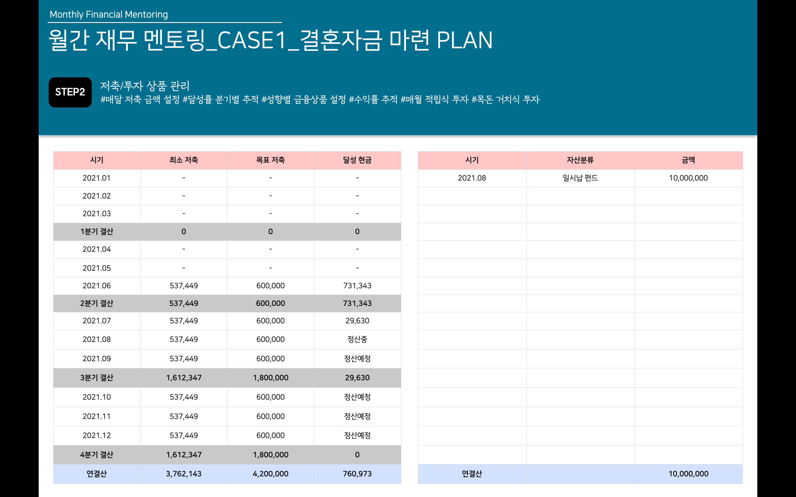

STEP
STEP1
STEP2
STEP3
STEP2 저축/투자 상품 관리
Monica's money recipe
안녕하세요.
미래에셋 금융서비스
손수지 FC
입니다.
⭐️STEP2 저축/투자 상품 관리⭐️
매달 저축할 수 있는 금액을 정해, 잘 달성 했는지 점검하고 분기별로 추적합니다. 그 과정에서 어떤 금융 상품으로 저축/투자 할지 성향에 따라 금융 상품을 설정하고 수익률 관리를 돕습니다. (매월 적립식 투자 and 목돈 거치식 투자)